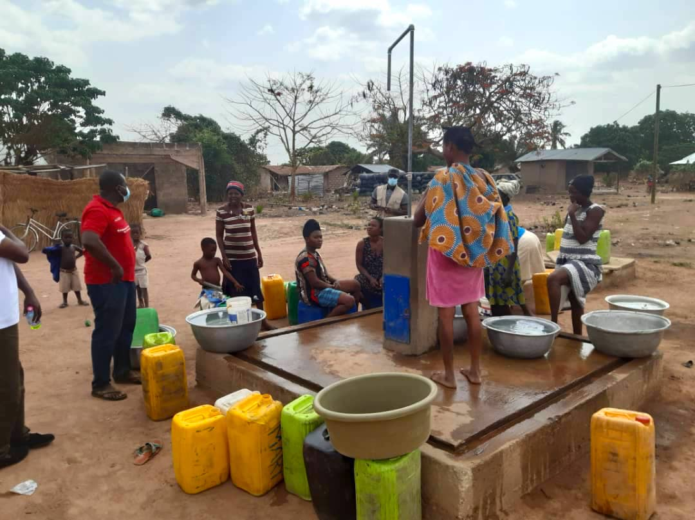

.jpg)
The Sustainable City, Dubai: The Sustainable City in Dubai is a modern residential development that is powered entirely by renewable energy, with a focus on sustainable living. The city features energy-efficient homes, electric car charging stations, and a waste-to-energy plant that generates power from household waste. The development also includes a network of bike paths, community gardens, and a farm-to-table program that promotes healthy eating and sustainable agriculture.

The Borehole Water Pump Project in Africa: This project provides rural communities in Africa with sustainable access to clean water through the use of borehole pumps powered by renewable energy.
The pumps have helped to improve health and hygiene, reduce the burden of collecting water, and support economic development by freeing up time and resources for other activities.
Masdar City, Abu Dhabi: Masdar City is a sustainable development in Abu Dhabi that aims to be a carbon-neutral, waste-free city of the future.
The city features a mix of residential, commercial, and research and development space, all powered by renewable energy and connected by an integrated public transportation system.
Masdar City also incorporates innovative technologies such as vertical gardens and green roofs to reduce its carbon footprint.